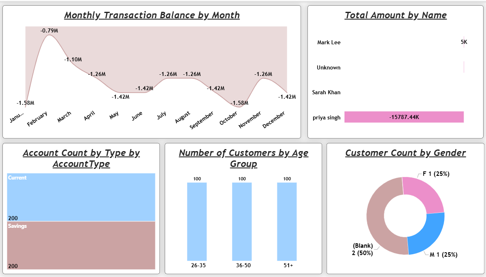

Banking
Analysis
Analyzing banking data to understand customer activity, transaction patterns, account distribution, and financial balances. The analysis explores customer demographics, account types, and changes in banking activity over time.
THE QUESTION
Problem Statement
Banking data contains information about customers, accounts, transactions, balances, and financial activity. However, raw banking records can make it difficult to understand customer behavior, identify transaction patterns, compare account types, and evaluate changes in financial activity over time. It can also be challenging to understand how customer demographics relate to account distribution and transaction activity. This project focuses on analyzing banking data to identify important patterns, understand customer and account characteristics, and provide a clearer view of overall banking activity.
INSIDE THE REPORT
Page Features
01
Banking Overview
Provides an overall view of banking activity through key measures and visualizations. The page explores total income, transaction amounts, transaction types, account activity, and financial balances across different periods.

BANKING OVERVIEW
02
Customer & Account Analysis
Examines customer demographics, account types, balances, and account distribution in greater detail. The analysis also explores customers by age group and gender, helping provide a clearer understanding of customer and account characteristics.

CUSTOMER & ACCOUNT ANALYSIS
METHODOLOGY
Analytical Approach
The project began with understanding the banking dataset and examining the fields required for the analysis. The data included information related to customers, accounts, transactions, balances, demographics, and financial activity. The dataset was explored and prepared to establish a reliable foundation for analyzing banking patterns.
Excel was used to organize and explore the available data before moving into the analytical stage. The analysis focused on understanding customer activity, transaction patterns, account distribution, and financial balances across different categories and time periods.
The prepared data was then transformed into an interactive Power BI report. DAX measures were created to calculate and analyze important banking metrics, including transaction amounts, balances, account counts, customer activity, and financial trends.
Additional categories and comparisons were used to understand customer demographics, including age groups and gender, while account-level analysis helped identify differences between account types. These calculations made it easier to compare banking activity across different customer and account segments.
The final report brings these analyses together through interactive visualizations that make it easier to explore customer behavior, account types, transaction patterns, and changes in financial activity across different periods.
THE BUILD
Tools & Technologies
GET IN TOUCH
Let’s Connect
Interested in working together, discussing a project, or simply connecting? I’d love to hear from you!
samiafathima28@gmail.com